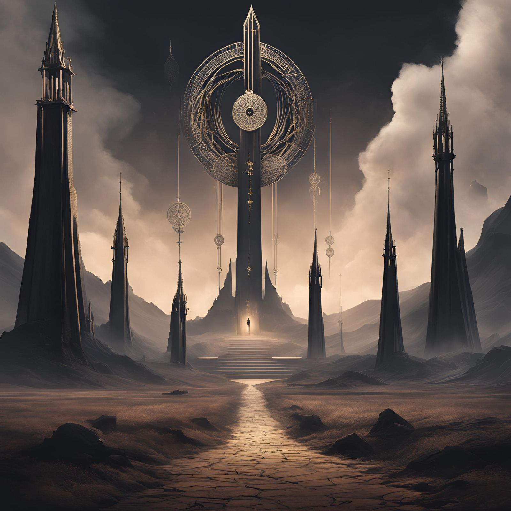
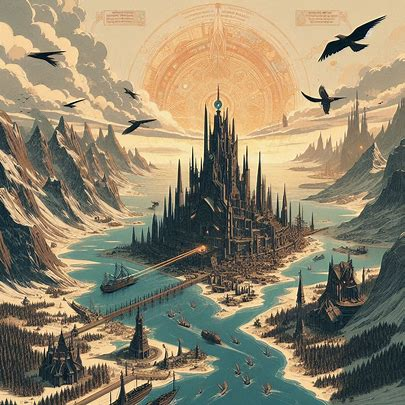
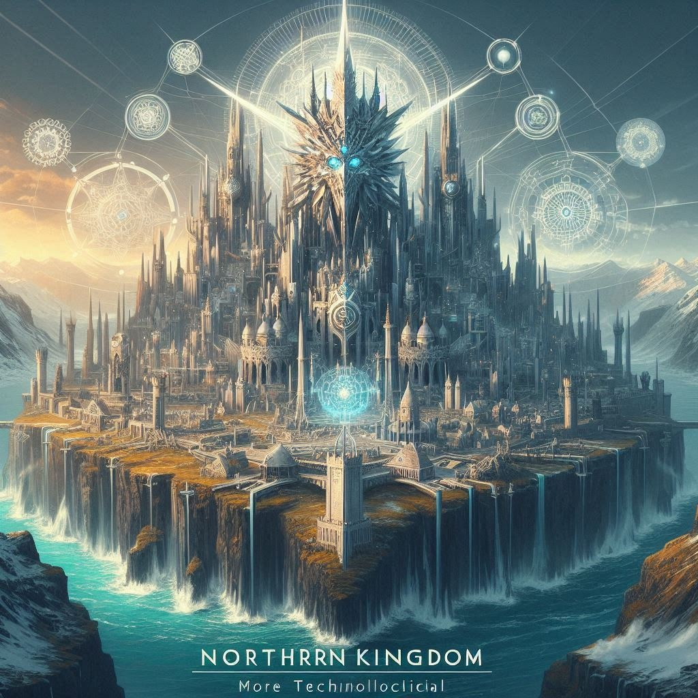
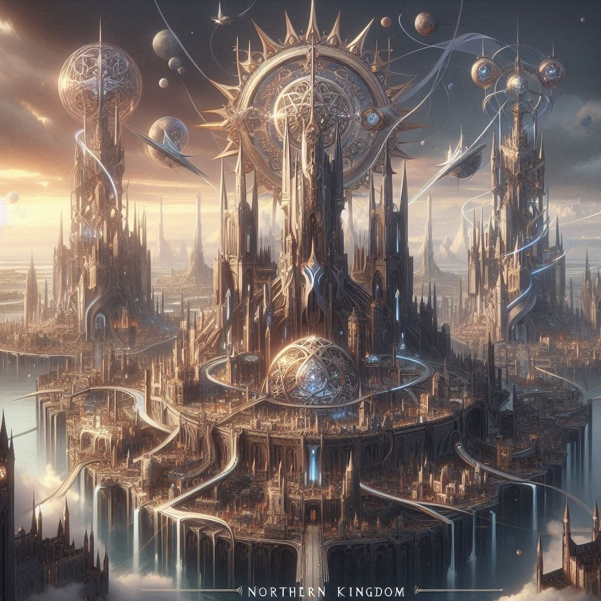
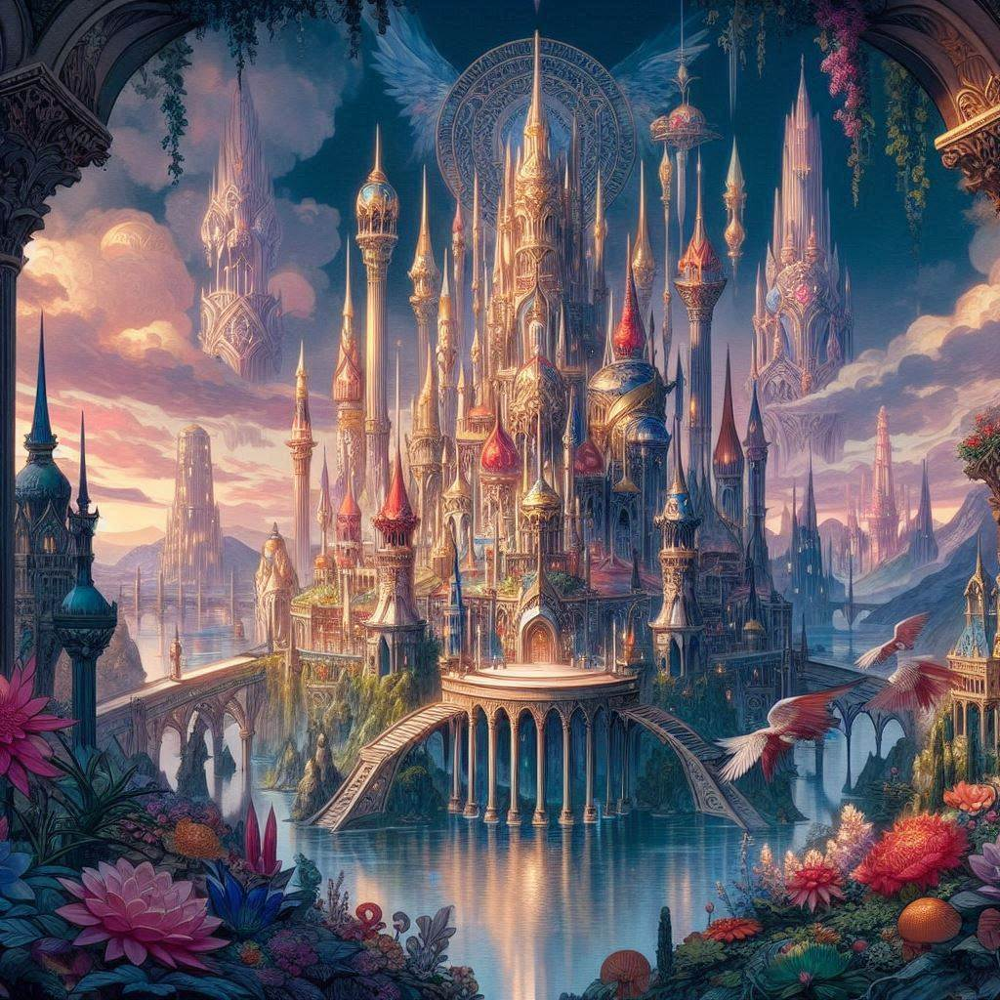

Capítulo 3: Revelações e Preparativos
Após a intensa batalha contra a alma corrompida, Shiro e Ive retornaram à casa dele, onde puderam descansar e recuperar o fôlego. Enquanto Shiro refletia sobre os eventos da noite anterior, Ive se aproximou dele com uma expressão séria no rosto.
"Shiro, precisamos conversar", disse ela, sua voz soando grave. "Há algo importante que você precisa saber sobre seu papel como ceifador."
Shiro olhou para ela, atento às palavras dela. Ele sabia que havia muito mais a aprender sobre o mundo da morte e suas responsabilidades como ceifador.
Ive respirou fundo antes de continuar. "Como você viu ontem à noite, nem todas as almas são fáceis de colher. Existem diferentes classes de almas, e a que você enfrentou era apenas a mais fraca, uma Classe E."
Shiro franziu a testa, processando a informação. "E que outras classes existem?"
Ive assentiu, prosseguindo com a explicação. "Há várias classes de almas, indo de E, a mais fraca, até A, a mais forte. Almas de Classe A são extremamente poderosas e perigosas; elas são classificadas como Demônios ou lacaios de Demônios, já que são dominadas pelo rancor e ódio e espalham isso para outras almas que atravessam o véu. Elas influenciam as almas recém-atiradas a se corromperem, e colhê-las pode ser uma tarefa quase impossível para um ceifador inexperiente como você."
Shiro engoliu em seco, percebendo a gravidade da situação. Ele mal havia sobrevivido a um encontro com uma alma de Classe E; enfrentar uma de Classe A era uma perspectiva assustadora.
"Além disso", continuou Ive, "você também precisa aprender a usar suas habilidades como ceifador de forma mais eficaz. Suas Foices da Morte e seus poderes são suas armas mais poderosas, e você precisa aprender a controlá-los se quiser ter alguma chance de sucesso em suas missões futuras."
Shiro assentiu, determinado a se tornar mais forte e mais habilidoso como ceifador. Ele sabia que tinha um longo caminho pela frente, cheio de desafios e perigos, mas estava determinado a enfrentá-los de frente.
"Também preciso te falar sobre o reino espiritual e como ele funciona", continuou Ive. "O Reino do Véu é o território do Deus-Morte, que é o meio onde fica o véu e é onde é a passagem para as almas dos humanos. Muitas almas se estabelecem no Reino do Véu, entre outras criaturas. Acima temos o Reino dos Céus, território do Deus dos Deuses, e abaixo do território do Deus-Morte temos o Reino de Anubis, Tártaro ou Submundo; há muitos nomes para aquele lugar."
"E onde eu entro nisso?" retrucou Shiro.
Ive sorriu. "Ah, meu pequeno gafanhoto, aí que está! O Reino do Véu é dividido em cinco partes:
Centro (Ordem dos Ceifeiros)
No coração do mapa, encontramos o Centro, onde a Ordem dos Ceifeiros reside. Suas torres altas e sinuosas representam a conexão entre os mundos humano e espiritual. Aqui, os ceifeiros mantêm a balança da vida e da morte. O solo é marcado por símbolos ancestrais, entrelaçados como teias de aranha, lembrando-nos da fragilidade da existência.
Reino do Sul (Reino de Espadas)
Ao sul, ergue-se o Reino de Espadas, um lugar de lâminas afiadas e sombras profundas. Suas montanhas são esculpidas em formas de espadas, apontando para o céu como advertência. As cidades são fortalezas impenetráveis, onde o egoísmo, o ódio e a sede de poder corroem a alma dos habitantes.
Reino do Norte (Reino de Paus)
No norte, o Reino de Paus brilha com uma luz diferente. Suas cidades são centros de inovação e conhecimento. Torres de vidro e metal se elevam, alimentadas pela mente brilhante de seus habitantes. Estradas de circuitos elétricos conectam as cidades, e os ventos carregam o zumbido das máquinas.
Reino do Leste (Reino de Ouros)
A leste, o Reino de Ouros é um espetáculo de riqueza e excesso. Palácios dourados e jardins exuberantes se estendem até onde os olhos alcançam. Mas sob a superfície brilhante, o orgulho, a avareza e a ganância corroem os corações dos nobres. Moedas de ouro fluem como rios.
Reino do Oeste (Reino de Copas)
Finalmente, a oeste, o Reino de Copas é um mosaico de emoções. Cidades flutuantes pairam sobre lagos cristalinos, refletindo o amor e a paixão. No entanto, cuidado. Esse amor pode ser invejoso, violento e possessivo. As florestas escondem segredos sombrios.
E temos nós que somos responsáveis por manter o equilíbrio tanto no mundo humano quanto no mundo espiritual."
"Então, o que vamos fazer agora?", perguntou ele, olhando para Ive com fumaças saindo pelos ouvidos depois de tanta informação.
Ive sorriu, um sorriso confiante e encorajador. "Agora, vamos começar seu treinamento. Temos muito trabalho a fazer antes de você estar pronto para enfrentar as almas mais poderosas. Mas não se preocupe, eu estarei ao seu lado em cada passo do caminho."
Shiro e Ive se prepararam para iniciar o treinamento de Shiro como ceifador. Enquanto se dirigiam para um campo aberto nos arredores da cidade, Ive não conseguia conter sua excitação, expressando seu entusiasmo de maneira animada e um tanto cômica.
"Estou animada para ver você em ação, Shiro!", exclamou Ive, pulando ao redor dele com uma energia contagiante. "Vamos fazer deste o melhor treinamento de todos os tempos!"
Shiro sorriu, contagiado pelo otimismo de Ive. "Espero que sim. Preciso aprender a controlar essas foices da morte antes de enfrentar almas mais poderosas."
Chegando ao campo aberto, Ive começou a explicar os primeiros exercícios de treinamento. "Ok, Shiro, primeiro vamos trabalhar na sua habilidade de manipular as foices. Você precisa aprender a lançá-las com precisão e a controlar sua trajetória."
Shiro assentiu, preparando-se para o desafio. Ele empunhou uma das foices, concentrando-se em seu alvo à distância. Com um movimento fluido, ele lançou a foice pelo ar, mas, para sua surpresa, ela girou descontroladamente e caiu no chão a alguns metros de distância.
Ive segurou o riso, mas não pôde evitar uma risadinha. "Bom, acho que ainda precisamos trabalhar nisso", disse ela, com um sorriso travesso. "Mas não se preocupe, Shiro, estamos apenas começando."
Enquanto continuavam o treinamento, Shiro e Ive enfrentaram uma série de desafios e contratempos, muitos dos quais resultaram em situações hilárias e momentos de humor. De vez em quando, Ive se encontrava presa em uma situação embaraçosa devido a sua própria exuberância, mas sua atitude positiva e sua capacidade de rir de si mesma ajudavam a manter o clima leve e descontraído.
Apesar dos desafios e das dificuldades, Shiro estava determinado a superar cada obstáculo que surgisse em seu caminho. Ele sabia que o treinamento seria árduo e exigente, mas também entendia que era essencial para seu crescimento como ceifador. Com Ive ao seu lado, ele estava confiante de que seria capaz de dominar suas habilidades e enfrentar os desafios que o esperavam no futuro.
Enquanto Shiro e Ive continuavam seu treinamento no campo aberto, Ive decidiu compartilhar com ele algumas informações importantes sobre as foices da morte e seu potencial oculto.
"Você sabe, Shiro", começou Ive, sua expressão séria contrastando com sua habitual exuberância, "as foices da morte são mais do que simples armas. Elas contêm um poder oculto, que pode ser desencadeado dependendo do usuário que as possui."
Shiro ergueu as sobrancelhas, intrigado com a revelação. "Que tipo de poder oculto?", perguntou ele, curioso.
Ive fez uma pausa dramática antes de responder. "Bem, isso depende do usuário. As foices têm o potencial de conceder habilidades extraordinárias, que podem variar desde a manipulação da energia espiritual até a comunicação com os mortos."
Shiro assentiu, absorvendo a informação. Ele mal podia acreditar no potencial incrível das foices da morte e no que isso poderia significar para ele como ceifador.
"Além disso", continuou Ive, "há rumores sobre os três Lordes da Morte, os mais habilidosos ceifadores do plano espiritual. Dizem que eles dominaram completamente o poder das foices e são capazes de realizar feitos extraordinários que desafiam a compreensão humana."
"Peraí, Lordes da Morte?" exclamou Shiro com um ponto de interrogação na cabeça.
"Isso, foram três ceifeiros que ganharam esse título pela própria morte. O primeiro, todo o reino espiritual conhece a sua história, um ceifeiro de mil anos, que derrotou o próprio Rei do Inferno em um combate corpo a corpo numa aposta e conseguiu o nocautear. O segundo, ninguém sabe o feito dele para ter impressionado a Morte, mas falam que ele preza pela justiça e pela verdade. O terceiro é um ex-humano que conseguiu impressionar o Deus da Morte com sua astúcia e malícia. Ele é um ser desprezível, odiado tanto no reino dos humanos por suas atrocidades que fez quando estava vivo quanto no reino espiritual pelos seus comportamentos malignos. Por causa de seus feitos e por conseguirem controlar completamente as suas Foices, eles carregam esse título", explicou Ive.
Shiro contemplou essas palavras, maravilhado com a ideia dos Lordes da Morte e seu domínio sobre as foices. Ele sabia que ainda tinha um longo caminho a percorrer antes de chegar a esse nível de habilidade, mas estava determinado a trabalhar duro e se tornar um ceifador verdadeiramente habilidoso.
Ive olhou para ele com curiosidade. "E a Morte?", perguntou ela. "Ela não lhe concedeu nenhuma bênção ou habilidade especial quando você se tornou ceifador?"
Shiro hesitou por um momento, lembrando-se da conversa sombria que teve com a própria Morte. "Na verdade", respondeu ele, "ela não disse nada sobre isso. Parecia que ela estava mais preocupada com o acordo que fizemos do que com me conceder qualquer bênção especial."
Ive franziu a testa, parecendo intrigada com a resposta de Shiro. "Hmm, isso é estranho", murmurou ela. "Mas talvez seja apenas uma questão de tempo antes de descobrirmos o verdadeiro potencial que a Morte concedeu a você."
Shiro concordou, sentindo uma sensação de expectativa se formar em seu peito. Ele sabia que havia muito mais para descobrir sobre seu papel como Ceifador e as verdadeiras extensões de seu poder. Com o desenrolar da história, ele estava determinado a desvendar os segredos que ainda estavam ocultos nas sombras do mundo da morte.
Após a conversa sobre as possibilidades ocultas das foices da morte e a menção dos misteriosos Lordes da Morte, Shiro e Ive continuaram seu treinamento com determinação renovada. Eles passaram horas praticando lançamentos de foices, exercícios de controle de energia espiritual e técnicas de combate básicas.
Durante uma pausa para descanso, Ive olhou para Shiro com um brilho travesso nos olhos. "Ei, Shiro, você já pensou sobre como vamos chamar suas habilidades especiais quando finalmente as descobrirmos?"
Shiro riu, imaginando as possibilidades. "Bem, ainda não tenho ideia do que elas são, então acho que teremos que esperar para ver", respondeu ele, com um sorriso.
Ive acenou com a cabeça, concordando. "É verdade. Mas, quem sabe, talvez você tenha uma habilidade única e incrível que nunca foi vista antes! Você poderia ser o próximo Lord da Morte!"
Shiro riu novamente, achando a ideia divertida. "Talvez um dia, mas por enquanto acho que vou me contentar em apenas dominar o básico", disse ele, com humildade.
Enquanto continuavam seu treinamento, Shiro enfrentou algumas almas de rank E, D e C. Ele começou a sentir uma sensação de confiança crescendo dentro dele. Ele estava aprendendo a controlar suas foices e a canalizar sua energia espiritual de forma mais eficaz, e estava determinado a se tornar um ceifador verdadeiramente habilidoso.
À medida que o sol se punha no horizonte, Shiro e Ive encerraram seu treinamento por hoje, satisfeitos com o progresso que haviam feito. Enquanto voltavam para casa, Shiro sentia-se energizado e pronto para enfrentar os desafios que o aguardavam como ceifador.
Ive lançou-lhe um sorriso animado. "Você está se saindo muito bem, Shiro", disse ela, com orgulho. "Com mais treinamento, você será capaz de realizar coisas incríveis como ceifador."
Shiro sorriu de volta, agradecendo o apoio de Ive. Ele sabia que tinha muito trabalho pela frente, mas estava ansioso para enfrentar o futuro.
E assim foi passado um mês de muitas batalhas, aprendizados e desenvolvimentos.